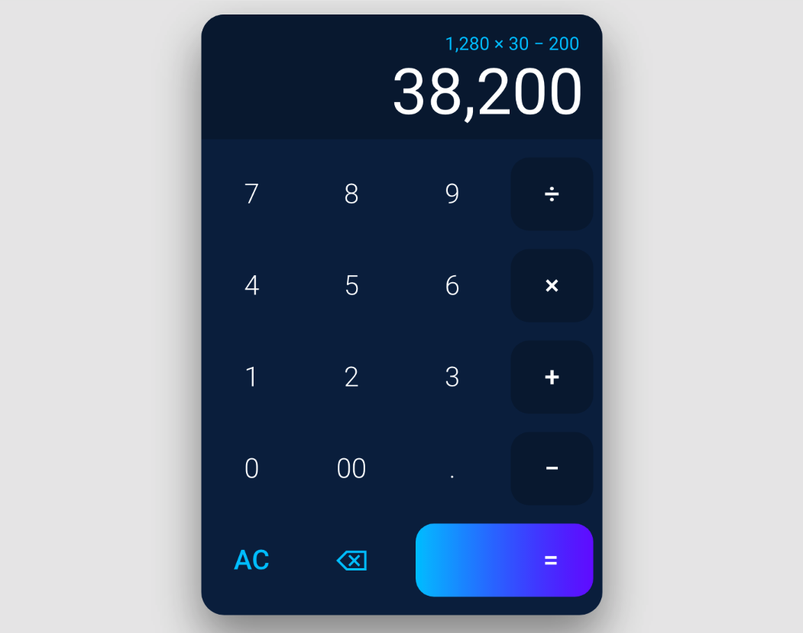

JS地下城：3F-計算機

規則
- 【特定技術】數字位數過多時，不能因此而破版，計算機功能皆須齊全
這次使用 原生 JS 來挑戰這次關卡
處理的問題有以下
- ieee754 浮點數
- 字數過長 不造成破版
- eval 加總
- 千分位進位
- 決定面版顯示資訊 做個 flag
- 鍵盤輸入
這裡我做兩個空陣列儲存健入的數值 分別為 tempFormula tempResult
tempFormula 用來顯示所有的算式tempResult 當遇到運算式的時後會清空 做下一個動作，最後用來顯示計算結果
使用 switch case 過濾鍵入的資訊
ieee754 浮點數
ieee754 維基百科
我這裡的處理方式是 加總後 *100 再做四捨五入Math.round() 後 再除以 100
因為小於 1 的數不能做四捨五入 所以 先*100 讓數值大於 1 後 做四捨五入 再除 100 回來
*100 /100 就是取到小數點第二位做處理，所以最多也只能計算到小數點第二位的值
算是有點偷吃步的寫法 XD
字數過長 不造成破版
當字數的總寬大於輸入框的總寬時 字型大小就自動 -2px 持續執行 直到字數總寬小於輸入框
這裡我學到了 while 的用法(參考其他人的寫法)，跟 for 迴圈的用法比較不一樣
題外話 在寫這篇文時 試著用 for 迴圈的寫法來寫，我想它們的不同處應該就是差在效率吧
1 | // while |
eval 加總
這次是使用 eval 加總 處理一連串的算式 蠻方便的 可參照
MDN-eval()
千分位進位(正規表示)
參照了這篇的正規做處理
正規千分位處理
另外也看到了
正規表示 線上產生器
決定面版顯示資訊 做個 flag
在計算的過程中 會遇到一些顯示上的問題
比如 按了 +−×÷ 後 再次輸入新的數字
結果框會清空之前的數值 然後新的值填上去
按了 = 後
全部清空 等等的這些呈現方式
我使用 flag 去做記錄 處理這些顯示問題
鍵盤輸入
最後!! 我真的覺得用滑鼠點的計算很難按 所以就加上了鍵盤輸入
先前在 js30 天的第一個單元 有練習到了鍵盤監聽事件 不過當時 是使用 keyCode 來監聽 這次使用的是 key
以上是我在寫這次計算機的處理過程
如有看不懂的地方 也歡迎詢問 XDD